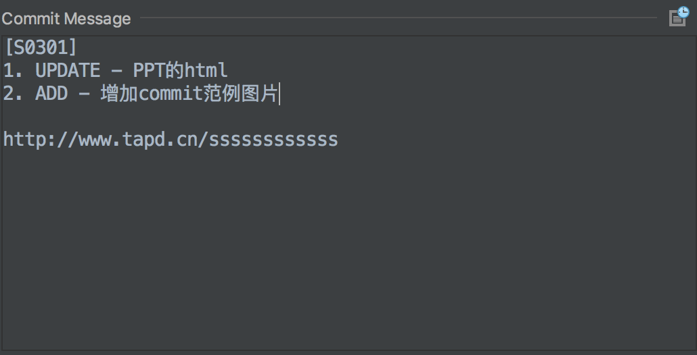

桔子理财
GIT使用规范讲解
by HuangJacky
目录
- Why Git?
- 常用命令
- 分支规范
- 标签规范
Why GIT
性能优势
分布式
差分编码
元数据管理
安全
SHA1哈希加密
完整历史记录
灵活
非线性工作流程
分支和标签完整支持
常用命令
名称解释

- 远程仓库 - Remote Repository
- 本地仓库 - Local Repository
- 缓存区 - Index
- 工作区 - Workspace
创建
# 初始化
git init 仓库名
# 远程拉取
git clone URL
# 创建分支
git checkout -b 分支名 原分支
添加/删除文件
# 增加单个文件
git add 文件路径
# 增加一个目录
git add 目录
# 增加所有改变的文件
git add -A
# 删除索引
git rm 同上
# 修改名称
git mv 文件1 文件2
所有操作都只影响本地缓存区
代码提交
# 提交修改到本地仓库
git commit -m 修改记录
# 提交修改到远程仓库
git push origin 分支名
代码提交注意事项
- 必须以项目或者缺陷编号开头,如[S0301]
- 以文件的维度说明本次提交修改功能点
- 最后最好能附带上TAPD连接
提交备注示例
状态查看
# 显示有改变的文件
git status
# 显示当前分支的版本历史
git log
# 显示具体修改的文件
git log --stat
# commit的信息搜索
git log -S "关键字"
# 查看指定文件修改记录
git log --follow 文件
git whatchanged 文件
# 显示差异
git diff 分支|commitid
# 查看指定commit的内容
git show commitid
撤销
git reset commitid
git reset HEAD~5
git reset --hard commitid
# 取消本地修改
git stash
# 推荐使用
git revert commitid
分支规范
工作流
- Git Workflow
- Github Workflow
- Gitlab Workflow
Master
- 与线上代码同步
- 不能直接编辑提交
- 发布系统直接推送
Develop
- 与开发环境的代码同步
- 不能直接编辑提交代码
- 作为其他分支样本
Feature功能分支
- 以feature/xxxx命令
- 从develop分支fork
- 开发完成后合并到develop分支,开发环境测试
Release预发布分支
- 以release/xxxx命令
- 从develop分支fork
- 体验期间如果有BUG修改, 需要合并回develop分支
体验完成合并到master分支完成上线
Hotfix修复分支
- 以hotfix/xxxx命名
- 从master分支fork
- BUG修复完成后分别合并回develop和master

分支常用操作
# 创建分支
git checkout develop
git checkout -b feature/warmjia
# 开发完成需要合并代码到develop
git checkout develop
# 拉取develop分支中最新的代码,防止开发期间有其他同学提交
git pull origin develop
git merge --no-ff feature/warmjia
# merge命令一般也会要求你填写备注,
# 如果成功就不需要这部分,不成功需要手动
# git add 你的改变
# git commit -m 备注
git push origin develop
# 删除临时分支
git branch -d feature/warmjia


注意事项
- 临时分支结单后都可以删除
- 主干分支不能直接编辑
- reset和rebase等命令不能在公共分支上面操作
标签规范
作用
- 标记每一个版本,方便记忆
- 方便发布和快速回滚
- 和发布系统配合使用方便管理
桔子理财标签规范
- prod标签用于master分支
- dev标签用于develop分支
- 版本号格式: 类型.dd.dd.dd
- 数字从0~99,大版本.新功能.BUG
- 父版本升级,子版本归0
How
# 添加本地标签
git tag -a 版本号 -m 备注 [commitid]
# 删除本地标签
git tag -d 版本号
# 删除远程标签
git push origin :refs/tags/版本号
# 推送标签到远程仓库
git push origin 版本号|--tags
When
- dev标签在提测时候打在develop分支上, 比如dev.2.2.0
- 测试期间如果有BUG修复,每次提交都要重新打标签, 比如dev.2.2.2
- prod标签在灰度测试通过以后打在master分支上, 比如prod.2.2.0
- hotfix修复后在合并回develop和master时候, 需要分别打上dev和prod标签
THE END
- Thanks